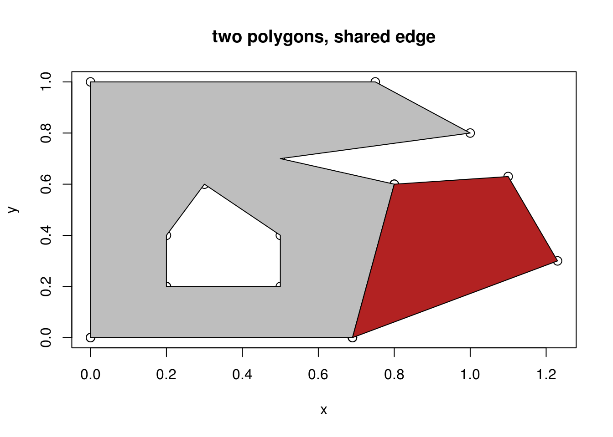
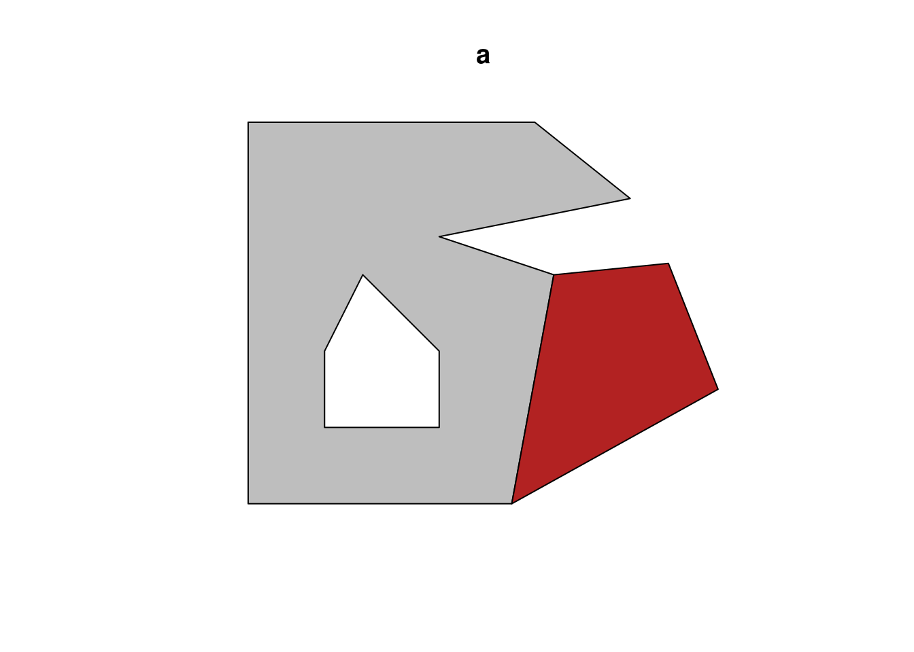
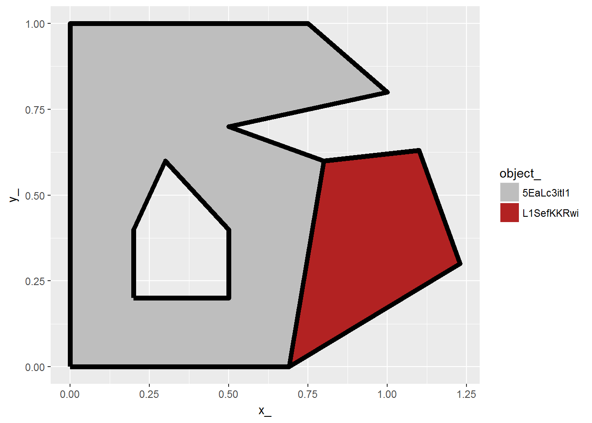
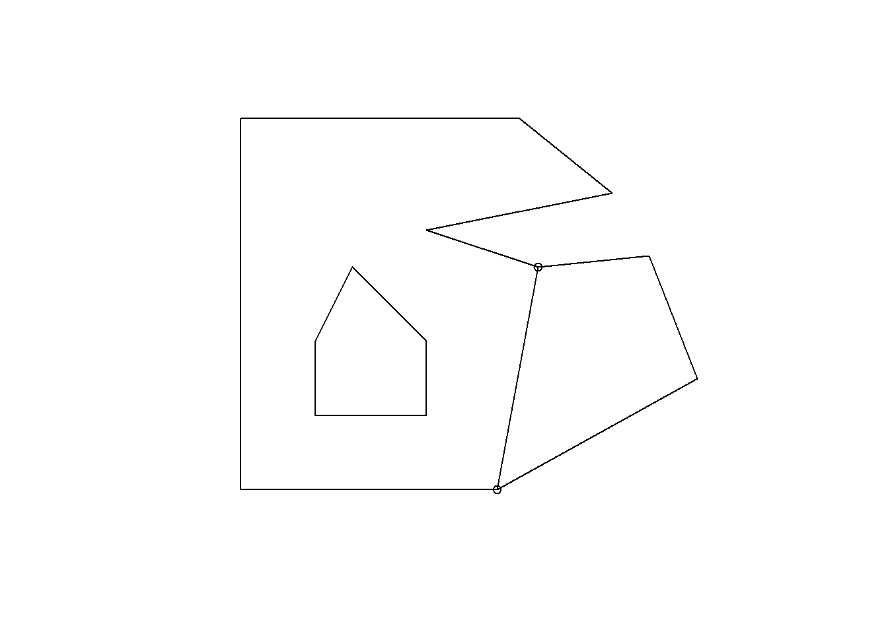
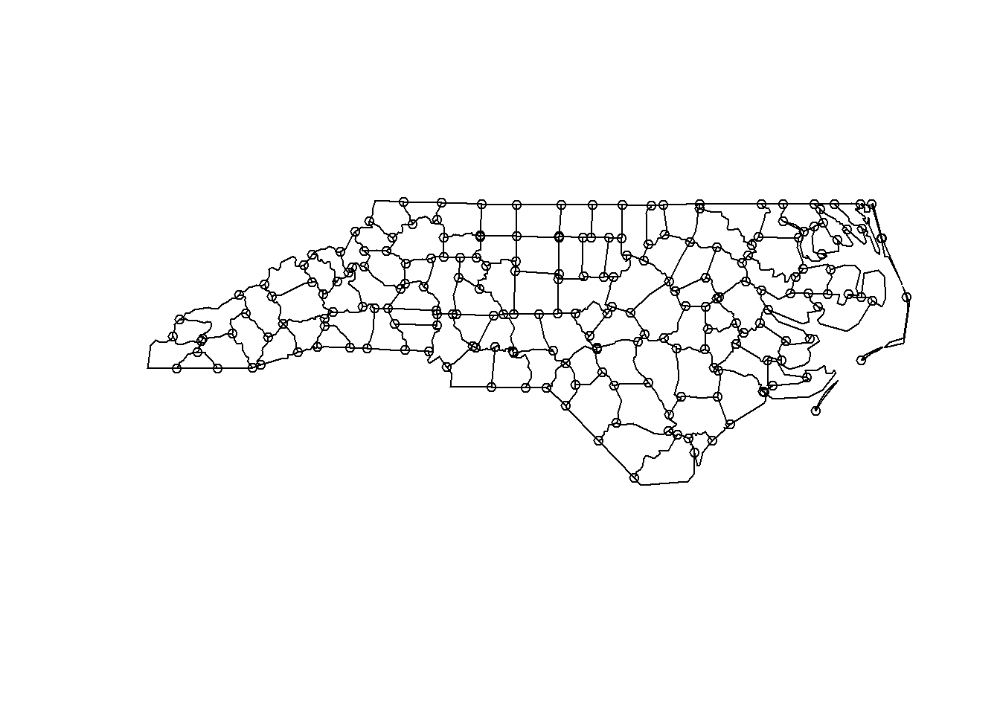
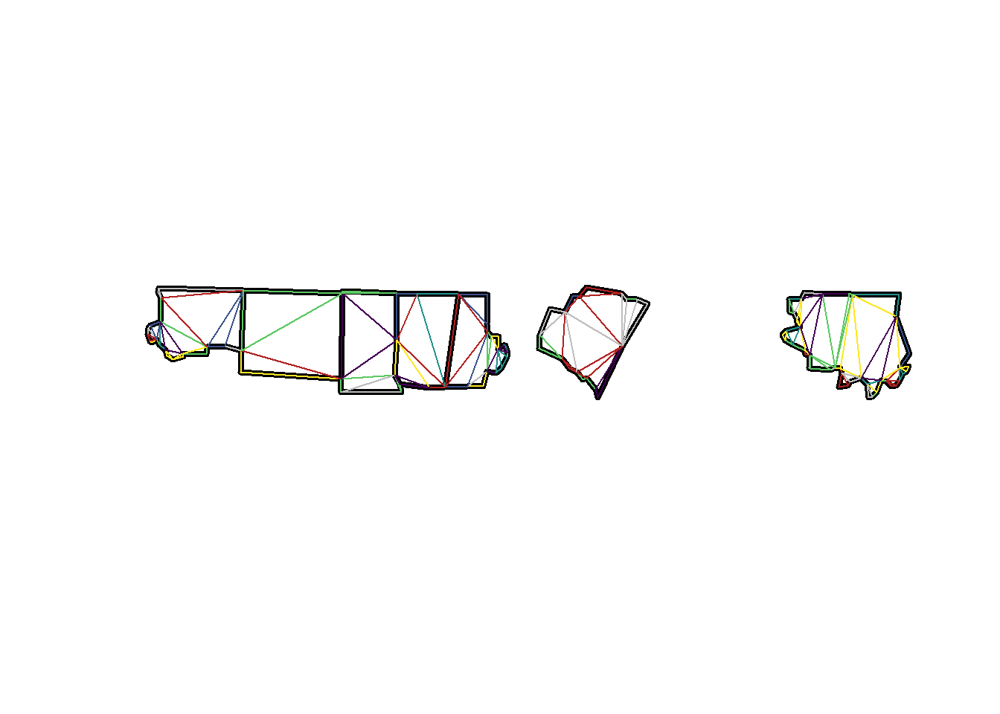

Spatial data and topology
Michael Sumner
2016-11-26
Spatial normal forms
In this document I describe a “normal-form” that provides a very general way of extending the traditional GIS forms, and is a bridge between vector and raster rather than being a different form altogether. The purpose of this document is to advocate for this general form of data organization that can be used for new extended uses of GIS. I’m not arguing that this be used in place of other optimized forms, although it can be: I am interested in operations that simply cannot be performed already.
When we talk about vector data in geo-spatial, we have at least three levels of hierarchy to consider in the data structures.
- objects (or features) - these are the things we primarily interact with and store data against
- coordinates - these are the specific vertices, the dimensionless points that place our data in a geometry
- branches - these are the parts that different objects are made of, they describe the way the coordinates are linked together, the topology
GIS tools typically only provides direct access to the objects, though the relations between branches and coordinates can sometimes be seen.
We generally cannot store information against the branches or the coordinates, beyond what they inherently are defined by. For coordinates this is the X and Y values, and/or the longitude and latitudes, but simple features does provide the ability to store a “third” coordinate “Z” and or a measure coordinate “M”. M is typically used for “linear referencing”, and not a more general multidimensional geometry (like time).
I’ll use the countries example from a GeoPackage file provided here. I use R because I can tell the complete story with it, in a concrete and reproducible way.
Read in a polygon vector layer in traditional GIS form, and plot it.
#library(rworldmap)
#data(countriesLow)
#p <- countriesLow
library(rgdal)
p <- readOGR(system.file("extdata", "small_world.gpkg", package = "rangl"), "ne_110m_admin_0_countries")## OGR data source with driver: GPKG
## Source: "C:/Users/mdsumner/Documents/R/win-library/3.3/rangl/extdata/small_world.gpkg", layer: "ne_110m_admin_0_countries"
## with 177 features
## It has 1 fieldsplot(p, col = viridis::viridis(nrow(p)))
This object p presents a “data frame” (i.e. a table) front-end that we can query and use at the objects level, much like in some GIS software we can easily select a single object or row in a table.
library(spbabel)
(pnganz <- subset(p, name %in% c("Australia", "Indonesia", "New Zealand", "Papua New Guinea")))## class : SpatialPolygonsDataFrame
## features : 4
## extent : 95.29303, 178.5171, -46.64124, 5.479821 (xmin, xmax, ymin, ymax)
## coord. ref. : +proj=longlat +datum=WGS84 +no_defs +ellps=WGS84 +towgs84=0,0,0
## variables : 1
## # A tibble: 4 × 1
## name
## * <fctr>
## 1 Australia
## 2 Indonesia
## 3 New Zealand
## 4 Papua New Guineapnganz$color <- viridis::viridis(nrow(pnganz))
plot(pnganz, col = viridis::viridis(nrow(pnganz)))
Looking at the object’s underlying geometric structure shows nested lists of matrixes of x,y coordinates. There is one matrix per branch, analogous to the way that feature parts are nested in standard Geom binary forms like WKB. Each component branch stores extra information about whether it is a hole, the ring direction, a coordinate for label plotting and so on. We otherwise cannot store any more information on the component parts though.
NOTE: the Spatial classes here are pre-simple features, so they are more analogous to the structures in a shapefile in that a polygon hole’s “island parent”" may be ambiguous, but this is not so important to this story. R now has simple features in the sfr project here, which adds Z, M and the possibility of some of the exotic types as well. https://github.com/edzer/sfr
These hierarchical structures can be serialized and stored in different ways, typically they are stored as binary geoms and stored directly in a table.
An interesting aspect here is that these structures don’t describe the topology of the objects in any special way, these are just paths of coordinates, and when they are plotted or used in analysis there’s a rule about how space is enclosed by a closed path. If we treat them as lines, the only difference is to not treat them as enclosed paths. Literally the only difference in the structure of this object from the polygons version is the name of the class, and the behaviour that methods invoked for this object will provide.
plot(as(pnganz, "SpatialLinesDataFrame"))
plot(as(pnganz, "SpatialLinesDataFrame"), col = viridis::viridis(nrow(pnganz), alpha = 0.7), lwd = c(2, 4), add = TRUE)
str(as(geometry(pnganz[1,]), "SpatialLines"))## Formal class 'SpatialLines' [package "sp"] with 3 slots
## ..@ lines :List of 1
## .. ..$ :Formal class 'Lines' [package "sp"] with 2 slots
## .. .. .. ..@ Lines:List of 2
## .. .. .. .. ..$ :Formal class 'Line' [package "sp"] with 1 slot
## .. .. .. .. .. .. ..@ coords: num [1:17, 1:2] 145 146 147 148 148 ...
## .. .. .. .. ..$ :Formal class 'Line' [package "sp"] with 1 slot
## .. .. .. .. .. .. ..@ coords: num [1:224, 1:2] 144 144 145 145 145 ...
## .. .. .. ..@ ID : chr "9"
## ..@ bbox : num [1:2, 1:2] 113.3 -43.6 153.6 -10.7
## .. ..- attr(*, "dimnames")=List of 2
## .. .. ..$ : chr [1:2] "x" "y"
## .. .. ..$ : chr [1:2] "min" "max"
## ..@ proj4string:Formal class 'CRS' [package "sp"] with 1 slot
## .. .. ..@ projargs: chr "+proj=longlat +datum=WGS84 +no_defs +ellps=WGS84 +towgs84=0,0,0"If we convert these data to “normal form”, we actually need at least three tables, one each for the objects, the branches, and the coordinates (vertices). The map_table function in the spbabel package creates these but also adds another link table between branches and vertices to enable de-duplication of shared vertices. The de-duplication is required for triangulating the polygons, and other topological operations.
ptabs <- spbabel::map_table(pnganz)
print(names(ptabs))## [1] "o" "b" "bXv" "v"print(sapply(ptabs, nrow))## o b bXv v
## 4 21 638 614Now it’s a bit clearer how the underlying entities are put together. Each table here has a unique relational id, this allows us to subset and recombine these tables without having to convert indexes each time.
The objects.
ptabs$o## # A tibble: 4 × 3
## name color object_
## * <fctr> <chr> <chr>
## 1 Australia #440154FF b4SWHqe1Rl
## 2 Indonesia #31688EFF E1Q8xoaUoS
## 3 New Zealand #35B779FF DhNjRO8BWE
## 4 Papua New Guinea #FDE725FF 0pp1FFarhmThe branches record which object they belong to.
ptabs$b## # A tibble: 21 × 3
## object_ branch_ island_
## <chr> <chr> <lgl>
## 1 b4SWHqe1Rl 5hve0rggNr TRUE
## 2 b4SWHqe1Rl dbJtMrjfk6 TRUE
## 3 E1Q8xoaUoS ZFJRwjLNlD TRUE
## 4 E1Q8xoaUoS 5LbZqm4lbw TRUE
## 5 E1Q8xoaUoS NlaDNsYgZV TRUE
## 6 E1Q8xoaUoS e3M0E1sMLq TRUE
## 7 E1Q8xoaUoS A7yQUC182p TRUE
## 8 E1Q8xoaUoS krsWFkrY0y TRUE
## 9 E1Q8xoaUoS lyFa0urnpW TRUE
## 10 E1Q8xoaUoS 2mbBhACCpc TRUE
## # ... with 11 more rowsThe branches-link-vertex table records the relationship between vertices and branches (by default the de-duplication is done in X-Y but it could be done in other geometric spaces, e.g. in 1D time or 3D X-Y-Z or X-Y-Time).
This is the instances of vertices as opposed to the unique paired values of coordinates themselves.
ptabs$bXv## # A tibble: 638 × 3
## branch_ order_ vertex_
## <chr> <int> <chr>
## 1 5hve0rggNr 1 51aAaAgPLX
## 2 5hve0rggNr 2 E76mN52GvR
## 3 5hve0rggNr 3 gKev3yzAp8
## 4 5hve0rggNr 4 jPZjgHZLfB
## 5 5hve0rggNr 5 yN9R45XmmA
## 6 5hve0rggNr 6 HpRc6cZMX0
## 7 5hve0rggNr 7 fcyRyESYT8
## 8 5hve0rggNr 8 NGVUuIqtpP
## 9 5hve0rggNr 9 rZCmpnF1RO
## 10 5hve0rggNr 10 8YKhPBs75N
## # ... with 628 more rowsAnd finally the vertices. In this example there are fewer unique x-y vertex than there are instance of the vertices, not a one-to-one match. This discrepancy obviously increases greatly for layers with shared boundaries, though in this example it is mostly due to the final closing coordinate on each polygon path - it’s a repeated instance, but not a repeated vertex value. There is at least one shared edge in this layer, clearly the one between Indonesia and Papua New Guinea.
ptabs$v## # A tibble: 614 × 3
## x_ y_ vertex_
## <dbl> <dbl> <chr>
## 1 145.3980 -40.79255 51aAaAgPLX
## 2 146.3641 -41.13770 E76mN52GvR
## 3 146.9086 -41.00055 gKev3yzAp8
## 4 147.6893 -40.80826 jPZjgHZLfB
## 5 148.2891 -40.87544 yN9R45XmmA
## 6 148.3599 -42.06245 HpRc6cZMX0
## 7 148.0173 -42.40702 fcyRyESYT8
## 8 147.9141 -43.21152 NGVUuIqtpP
## 9 147.5646 -42.93769 rZCmpnF1RO
## 10 146.8703 -43.63460 8YKhPBs75N
## # ... with 604 more rowsPolygons are just lines
From this form we can see clearly that polygons and lines in GIS are really the same thing, we have paths of coordinates and then rules about how they are used.
If we compare each entity table side by side it’s clear the only difference is whether a branch is badged as an island vs. a hole.
For points we don’t need the branches or the order data, though for multipoints we do need branch.
ltabs <- spbabel::map_table(as(pnganz, "SpatialLinesDataFrame"))
for (i in seq_along(ltabs)) {
writeLines("------------------------------")
print(ltabs[i])
print(ptabs[i])
writeLines("")
}## ------------------------------
## $o
## # A tibble: 4 × 3
## name color object_
## * <fctr> <chr> <chr>
## 1 Australia #440154FF 2ep6vHz8vo
## 2 Indonesia #31688EFF KVAN6Bbxx9
## 3 New Zealand #35B779FF BLX129fXAl
## 4 Papua New Guinea #FDE725FF 3jfxEZFpv4
##
## $o
## # A tibble: 4 × 3
## name color object_
## * <fctr> <chr> <chr>
## 1 Australia #440154FF b4SWHqe1Rl
## 2 Indonesia #31688EFF E1Q8xoaUoS
## 3 New Zealand #35B779FF DhNjRO8BWE
## 4 Papua New Guinea #FDE725FF 0pp1FFarhm
##
##
## ------------------------------
## $b
## # A tibble: 21 × 2
## object_ branch_
## <chr> <chr>
## 1 2ep6vHz8vo xwGFzKIcDN
## 2 2ep6vHz8vo PqmxQYlQ4m
## 3 KVAN6Bbxx9 0W6soLkmmv
## 4 KVAN6Bbxx9 9pv4zOYUk2
## 5 KVAN6Bbxx9 kAoI7YAGUJ
## 6 KVAN6Bbxx9 Fi0ivwPQur
## 7 KVAN6Bbxx9 bBUTRUocq9
## 8 KVAN6Bbxx9 7bjqQHoOWY
## 9 KVAN6Bbxx9 TzME98HhBd
## 10 KVAN6Bbxx9 hDAMc4H0vp
## # ... with 11 more rows
##
## $b
## # A tibble: 21 × 3
## object_ branch_ island_
## <chr> <chr> <lgl>
## 1 b4SWHqe1Rl 5hve0rggNr TRUE
## 2 b4SWHqe1Rl dbJtMrjfk6 TRUE
## 3 E1Q8xoaUoS ZFJRwjLNlD TRUE
## 4 E1Q8xoaUoS 5LbZqm4lbw TRUE
## 5 E1Q8xoaUoS NlaDNsYgZV TRUE
## 6 E1Q8xoaUoS e3M0E1sMLq TRUE
## 7 E1Q8xoaUoS A7yQUC182p TRUE
## 8 E1Q8xoaUoS krsWFkrY0y TRUE
## 9 E1Q8xoaUoS lyFa0urnpW TRUE
## 10 E1Q8xoaUoS 2mbBhACCpc TRUE
## # ... with 11 more rows
##
##
## ------------------------------
## $bXv
## # A tibble: 638 × 3
## branch_ order_ vertex_
## <chr> <int> <chr>
## 1 xwGFzKIcDN 1 zRZPWEaKHt
## 2 xwGFzKIcDN 2 TOIJc3QYCw
## 3 xwGFzKIcDN 3 GAOHxmcnf8
## 4 xwGFzKIcDN 4 LfVuLySAYl
## 5 xwGFzKIcDN 5 jmehg9aVez
## 6 xwGFzKIcDN 6 RPc0bOKIbw
## 7 xwGFzKIcDN 7 t69nak8yJu
## 8 xwGFzKIcDN 8 3mYELNROWD
## 9 xwGFzKIcDN 9 wWHvcZugsL
## 10 xwGFzKIcDN 10 4KkDD0vD6l
## # ... with 628 more rows
##
## $bXv
## # A tibble: 638 × 3
## branch_ order_ vertex_
## <chr> <int> <chr>
## 1 5hve0rggNr 1 51aAaAgPLX
## 2 5hve0rggNr 2 E76mN52GvR
## 3 5hve0rggNr 3 gKev3yzAp8
## 4 5hve0rggNr 4 jPZjgHZLfB
## 5 5hve0rggNr 5 yN9R45XmmA
## 6 5hve0rggNr 6 HpRc6cZMX0
## 7 5hve0rggNr 7 fcyRyESYT8
## 8 5hve0rggNr 8 NGVUuIqtpP
## 9 5hve0rggNr 9 rZCmpnF1RO
## 10 5hve0rggNr 10 8YKhPBs75N
## # ... with 628 more rows
##
##
## ------------------------------
## $v
## # A tibble: 614 × 3
## x_ y_ vertex_
## <dbl> <dbl> <chr>
## 1 145.3980 -40.79255 zRZPWEaKHt
## 2 146.3641 -41.13770 TOIJc3QYCw
## 3 146.9086 -41.00055 GAOHxmcnf8
## 4 147.6893 -40.80826 LfVuLySAYl
## 5 148.2891 -40.87544 jmehg9aVez
## 6 148.3599 -42.06245 RPc0bOKIbw
## 7 148.0173 -42.40702 t69nak8yJu
## 8 147.9141 -43.21152 3mYELNROWD
## 9 147.5646 -42.93769 wWHvcZugsL
## 10 146.8703 -43.63460 4KkDD0vD6l
## # ... with 604 more rows
##
## $v
## # A tibble: 614 × 3
## x_ y_ vertex_
## <dbl> <dbl> <chr>
## 1 145.3980 -40.79255 51aAaAgPLX
## 2 146.3641 -41.13770 E76mN52GvR
## 3 146.9086 -41.00055 gKev3yzAp8
## 4 147.6893 -40.80826 jPZjgHZLfB
## 5 148.2891 -40.87544 yN9R45XmmA
## 6 148.3599 -42.06245 HpRc6cZMX0
## 7 148.0173 -42.40702 fcyRyESYT8
## 8 147.9141 -43.21152 NGVUuIqtpP
## 9 147.5646 -42.93769 rZCmpnF1RO
## 10 146.8703 -43.63460 8YKhPBs75N
## # ... with 604 more rowsWhat makes polygons different to lines?
The coordinate-path structures used above for polygons and lines are very explicit, and in traditional form cannot be used in a more abstract way. By collecting the attributes of the entities in use into their own tables we start to build this abstraction. The paths are represented as a sequence of identifiers, rather than the actual coordinate values themselves. Why do this? We can abstract the choice of what do with those coordinate away from their storage. We also get a limited form of topology, in that a change made to one vertex coordinate attribute is reflected in all of the branches that use that vertex, analogous the Shared Edit mode in Manifold 8.0.
The next step in topological relationships is to represent each segment of a line rather than the entire path. To do this we need a table of segments, and a link table to store the identity of the two vertices used by those segments.
This has been implemented in the package rangl.
lsegment <- rangl::rangl(as(pnganz, "SpatialLinesDataFrame"))
as.data.frame(lapply(lsegment, nrow))## o v l lXv meta
## 1 4 614 617 1234 1This is no different for polygons when we store them as polygon paths, so then why is the segment/edge model useful? It provides a table to store metrics such as the length of the segment, its duration in time, and other information. The segment/edge model is also a required precursor for building a triangulated mesh. This brings us to an important stage of the story.
Polygons are not composed of primitives
Lines and polygons are stored as paths of coordinates, but lines can be decomposed to a more abstract form. Once in this form we can (in R) plot the lines much more quickly as segments, each with their own individual properties.
par(mar = rep(0, 4))
plot(lsegment$v$x_, lsegment$v$y_, asp = 1, pch = ".", axes = FALSE)
lines(lsegment$v$x_, lsegment$v$y_, col = viridis::viridis(4))
Not surprisingly, our connected line doesn’t make much sense, but worse our attempts at applying multiple colours was completely unsuccessful. Segments to the rescue.
par(mar = rep(0, 4))
plot(lsegment$v$x_, lsegment$v$y_, asp = 1, pch = ".", axes = FALSE)
lsegment$o$color <- viridis::viridis(nrow(lsegment$o))
#segs <- lsegment$l %>% inner_join(lsegment$o %>% select(object_, color)) %>% inner_join(lsegment$lXv) %>% select(color, vertex_, segment_) %>% inner_join(lsegment$v)
segs <- lsegment$lXv %>% inner_join(lsegment$l) %>% inner_join(lsegment$o %>% dplyr::select(object_, color)) %>% dplyr::select(color, vertex_, segment_) %>% inner_join(lsegment$v)## Joining, by = "segment_"## Joining, by = "object_"## Joining, by = "vertex_"ix <- seq(1, nrow(segs)-1, by = 2); segments(segs$x_[ix], segs$y_[ix], segs$x_[ix + 1], segs$y_[ix+1], col = segs$color[ix], lwd = 4)
This is not lovely code, though it is straight forward and systematic. Treated as segments we automatically get the right “topology” of our lines, we joined the object attribute down to the actual pairs of coordinates and plotted all the segments individually. We managed to keep our object-part-coordinate hierarchy, though we’ve chosen primitives belonging to objects rather than branches as the model. This is also convenient for the next step because line segments are what we need for generating primitives to represent the polygons as surfaces.
Constrained polygon triangulation starts with line primitives
Treat the polygon as segments build a triangulation, a surface of 2D triangle primitives.
prim2D <- rangl::rangl(pnganz)
plot(pnganz, border = "black", col = "transparent", lwd = 4)
for (i in seq(nrow(prim2D$t))) {
tri <- prim2D$t[i, ] %>% inner_join(prim2D$tXv, "triangle_") %>% inner_join(prim2D$v, "vertex_") %>% dplyr::select(x_, y_)
polygon(tri$x_, tri$y_, border = (prim2D$t[i, ] %>% inner_join(prim2D$o, "object_"))$color[1])
}
The plot loop above is very inefficient, but it’s purely to illustrate that we have the shapes in the right form. This is used in rangl to plot the shapes in 3D, either in native planar form or as a surface of a globe.
library(rgl)
plot(prim2D, specular = "black")## Joining, by = "object_"## Joining, by = "triangle_"subid <- currentSubscene3d()
rglwidget(elementId="pnganz")preservea6f7f4bf4b81fbda
plot(rangl::globe(prim2D), specular = "black")## Joining, by = "object_"
## Joining, by = "triangle_"subid <- currentSubscene3d()
rglwidget(elementId="png_anz_globe")preserve0f844e5f9dd139a6
Why do this? It’s not just to plot a globe, but to see why it’s helpful to see what the function globe() does.
Run the layer through globe() and print out the vertices table.
prim2D$v## # A tibble: 614 × 3
## x_ y_ vertex_
## <dbl> <dbl> <chr>
## 1 114.6165 -28.51640 vqMOqUK3bE
## 2 114.6420 -28.81023 fAvJwz55Ml
## 3 115.0400 -29.46110 aoUoQDYybT
## 4 114.2329 -26.29845 7ataOXEWp3
## 5 113.7784 -26.54903 xGntvbT2KQ
## 6 114.0489 -27.33477 il4dU1zlD1
## 7 114.1736 -28.11808 mKPsjJO1Nf
## 8 113.4775 -26.54313 ztk03iPR1k
## 9 115.0268 -34.19652 TyEykZeTp9
## 10 115.5451 -33.48726 QPHZCcpIuL
## # ... with 604 more rowsrangl::globe(prim2D)$v## # A tibble: 614 × 4
## x_ y_ vertex_ z_
## <dbl> <dbl> <chr> <dbl>
## 1 -2336231 5098892 vqMOqUK3bE -3026914
## 2 -2331985 5083655 fAvJwz55Ml -3055489
## 3 -2352381 5035508 aoUoQDYybT -3118501
## 4 -2348469 5217578 7ataOXEWp3 -2808743
## 5 -2302026 5224737 xGntvbT2KQ -2833605
## 6 -2310595 5177787 il4dU1zlD1 -2911217
## 7 -2305320 5135903 mKPsjJO1Nf -2988053
## 8 -2274676 5237020 ztk03iPR1k -2833021
## 9 -2234102 4785201 TyEykZeTp9 -3564497
## 10 -2296191 4804324 QPHZCcpIuL -3499156
## # ... with 604 more rowssubid <- currentSubscene3d()
rglwidget(elementId="prim2D")preservef937a16d88541b19
The only thing that happened was that the input x_ and y_ were converted to geocentric “x, y, z” coordinates. Under the hood this is done by driving the transformation with PROJ.4 (via the R package proj4). The PROJ.4 family in use is “geocent”, i.e. here the meta table simply records the history of transformations.
rangl::globe(prim2D)$meta[, c("proj", "ctime")]## # A tibble: 2 × 2
## proj
## <chr>
## 1 +proj=geocent +ellps=WGS84
## 2 +proj=longlat +datum=WGS84 +no_defs +ellps=WGS84 +towgs84=0,0,0
## # ... with 1 more variables: ctime <chr>We can otherwise do anything we like with the vertices, including reprojecting them and copying on other attributes.
As an example, copy on the Etopo5 elevations, first with the default triangulation, and then with a denser version.
## TBDNow for some examples to give an overview of diferent tools in R.
Base graphics
p1 <- cbind(x = c(0, 0, 0.75, 1, 0.5, 0.8, 0.69, 0),
y = c(0, 1, 1, 0.8, 0.7, 0.6, 0, 0))
p2 <- cbind(x = c(0.2, 0.2, 0.3, 0.5, 0.5, 0.2),
y = c(0.2, 0.4, 0.6, 0.4, 0.2, 0.2))
p4 <- cbind(x = c(0.69, 0.8, 1.1, 1.23, 0.69),
y = c(0, 0.6, 0.63, 0.3, 0))
pp <- rbind(p1, NA, p2[nrow(p2):1, ])
plot(rbind(pp, p4), cex = 1.3, main = "two polygons, shared edge")
polypath(pp, col = "grey")
polypath(p4, col = "firebrick")
Simple features for R
#devtools::install_github("edzer/sfr")
library(sf)## Linking to GEOS 3.5.0, GDAL 2.1.1library(tibble)
x <- st_as_sf(tibble(a = 1:2, geom = st_sfc(list(st_multipolygon(list(list(p1, p2[rev(seq(nrow(p2))), ]))),
st_multipolygon(list(list(p4)))))))
plot(x, col = c("grey", "firebrick"))
Spatial (legacy sp package)
library(sp)
spgdf <- as(x, "Spatial")
plot(spgdf, col = c("grey", "firebrick"))
Grammar of graphics
## fortify model
library(dplyr)
meta <- as_tibble(x %>% dplyr::select(-geom) %>% mutate(object_ = row_number()))
map <- spbabel::sptable(spgdf)
library(ggplot2)
ggcols <- ggplot2::scale_fill_manual(values = c("1" = "grey", "2" = "firebrick"))
ggplot(map %>% mutate(rn = row_number()) %>% inner_join(meta)) + aes(x = x_, y = y_, group = branch_, fill = factor(object_)) +
ggcols + ggpolypath::geom_polypath() + geom_path()## Joining, by = "object_"Map table
This is a four-table decomposition of Spatial objects, a normalization of the fortify model.
library(spbabel)
mp <- map_table(spgdf)
ggcols <- ggplot2::scale_fill_manual(values = setNames(c("grey", "firebrick"), mp$o$object_))
gg <- ggplot(mp$o %>% inner_join(mp$b) %>% inner_join(mp$bXv) %>% inner_join(mp$v))## Joining, by = "object_"## Joining, by = "branch_"## Joining, by = "vertex_"gg + aes(x = x_, y = y_, group = branch_, fill = object_) + ggcols + ggpolypath::geom_polypath() + geom_path(lwd = 2)Planar straight line graph
Here we identify all edges, i.e. line segments between a pair of coordinates, regardless of direction.
Note in the second plot we identify “nodes”, and that there are two segments that overlap between the neighbouring polygons. In Arc speak this is just one arc, but in simple features it is just a segment on one polygon path, and another segment on the other polygon path, without any explicit record or knowledge of that relationship.
p2seg <- function(x) as_tibble(rangl:::path2seg(x$vertex_))
BxE <- mp$bXv %>% split(.$branch_) %>% purrr::map(p2seg) %>% bind_rows(.id = "branch_")
ggplot(BxE %>% inner_join(mp$v %>% rename(x = x_, y = y_), c("V1" = "vertex_")) %>%
inner_join(mp$v, c("V2" = "vertex_"))) +
geom_segment(aes(x = x, y = y, xend = x_, yend = y_, colour = V1)) #+ guides(colour = FALSE)
uE <- mp$bXv %>% split(.$branch_) %>% purrr::map(p2seg) %>% bind_rows(.id = "branch_")%>% mutate(edge_ = row_number()) %>%
mutate(uu = paste(pmin(V1, V2), pmax(V1, V2), sep = "_")) %>% distinct(uu, .keep_all = TRUE)
nodes <- bind_rows(mp$v %>% dplyr::select(vertex_) %>% inner_join(uE, c("vertex_" = "V1")),
mp$v %>% dplyr::select(vertex_) %>% inner_join(uE, c("vertex_" = "V2"))) %>%
distinct(edge_, vertex_) %>%
group_by(vertex_) %>% mutate(nb = n()) %>% ungroup() %>%
filter(nb > 2) %>% distinct(vertex_) %>% inner_join(mp$v)## Joining, by = "vertex_"plot(spgdf)
points(nodes$x_, nodes$y_, cex = 0.9)
Arc-node
What is arc-node? The nodes in the graph are the vertices that are shared by any two arcs. The arcs are the paths that trace a line between nodes. This means that not all coordinates are nodes, and even that not all parts have any node/s at all. We can produce this by traversal of all edges to determine the arcs that join nodes and anything left is just a standalone arc. This is brute-force remove duplicate edges (ignore direction), join on start vertex, end vertex, count the number of edges involved and any with 3 edges is a Node.
## what are the nodes?
x1 <- st_read(system.file("shape/nc.shp", package="sf"), "nc", crs = 4267)## Reading layer `nc' from data source `E:\inst\R\R\library\sf\shape\nc.shp' using driver `ESRI Shapefile'
## converted into: MULTIPOLYGON
## Simple feature collection with 100 features and 14 fields
## geometry type: MULTIPOLYGON
## dimension: XY
## bbox: xmin: -84.32385 ymin: 33.88199 xmax: -75.45698 ymax: 36.58965
## epsg (SRID): 4267
## proj4string: +proj=longlat +datum=NAD27 +no_defsmp <- spbabel::map_table(x1)
uE <- mp$bXv %>% split(.$branch_) %>% purrr::map(p2seg) %>% bind_rows(.id = "branch_")%>% mutate(edge_ = row_number()) %>%
mutate(uu = paste(pmin(V1, V2), pmax(V1, V2), sep = "_")) %>% distinct(uu, .keep_all = TRUE)
nodes <- bind_rows(mp$v %>% dplyr::select(vertex_) %>% inner_join(uE, c("vertex_" = "V1")),
mp$v %>% dplyr::select(vertex_) %>% inner_join(uE, c("vertex_" = "V2"))) %>%
distinct(edge_, vertex_) %>%
group_by(vertex_) %>% mutate(nb = n()) %>% ungroup() %>%
filter(nb > 2) %>% distinct(vertex_) %>% inner_join(mp$v)## Joining, by = "vertex_"plot(x1)
points(nodes$x_, nodes$y_, cex = 0.9)
Arc-node topology was used by the Arc Info software prior to the invention of the shapefile and ArcView . . .
TopoJSON uses this model, or at least something very similar to it: https://github.com/topojson/topojson/wiki
Simplicial complex
The simplicial complex is more abstract than arc-node topology, but also much more general. Arcs can only be joined to bound regions in the plane, but the simplicial complex is composed of primitives for any topology. Coordinates are 0-D primitives, line segments are 1-D primitives, and triangles are 2-primitives. We are free to store any chosen geometry on the coordinates of primitives, so they can describe overlapping surfaces in 3D space, or connected paths through 4D space. There’s a natual extension up in dimension to volumes as well, where 3-D primitives (tetrahedron) compose 3D-space filling shapes, and so on.
In short, arc-node is one of several 2D-only optimizations for spatial data that do no apply to higher dimensional topologies and/or higher dimensional geometry. The simplicial complex is a finite-element model that is general enough for any spatial or other hierarchically organized multi-dimensional data.
sc <- rangl::rangl(spgdf)
plot(sc)## Joining, by = "object_"## Joining, by = "triangle_"plot(x)
l1 <- inner_join(sc$o[1, ], sc$t) %>% split(.$triangle_) %>% purrr::map(function(x) inner_join(x, sc$tXv) %>% inner_join(sc$v)) ## Joining, by = "object_"
## Joining, by = "triangle_"## Joining, by = "vertex_"## Joining, by = "triangle_"## Joining, by = "vertex_"## Joining, by = "triangle_"## Joining, by = "vertex_"## Joining, by = "triangle_"## Joining, by = "vertex_"## Joining, by = "triangle_"## Joining, by = "vertex_"## Joining, by = "triangle_"## Joining, by = "vertex_"## Joining, by = "triangle_"## Joining, by = "vertex_"## Joining, by = "triangle_"## Joining, by = "vertex_"## Joining, by = "triangle_"## Joining, by = "vertex_"## Joining, by = "triangle_"## Joining, by = "vertex_"## Joining, by = "triangle_"## Joining, by = "vertex_"## Joining, by = "triangle_"## Joining, by = "vertex_"j <- lapply(l1, function(x) polygon(cbind(x$x_, x$y_), col = "grey"))
l2 <- inner_join(sc$o[2, ], sc$t) %>% split(.$triangle_) %>% purrr::map(function(x) inner_join(x, sc$tXv) %>% inner_join(sc$v)) ## Joining, by = "object_"## Joining, by = "triangle_"## Joining, by = "vertex_"## Joining, by = "triangle_"## Joining, by = "vertex_"j <- lapply(l2, function(x) polygon(cbind(x$x_, x$y_), col = "firebrick"))
## this is slow but does show that we have a full and constrained triangulation
set.seed(75)
sc <- rangl::rangl(as(x1[24:30, ], "Spatial"))
plot(x1[24:30, ], border = "black", lwd = 4)
for (i in seq(nrow(x1))) {
l1 <- inner_join(sc$o[i, ], sc$t, "object_") %>% split(.$triangle_) %>% purrr::map(function(x) inner_join(x, sc$tXv, "triangle_") %>% inner_join(sc$v, "vertex_"))
j <- lapply(l1, function(x) polygon(cbind(x$x_, x$y_), border = sample(c("grey", "firebrick", viridis::viridis(5)), 1)))
}
Affine-georeferenced rasters
These are very well supported by the raster package. Generally, affine refers to a linear transformation (which preserves points, straight lines and planes)[https://en.wikipedia.org/wiki/Affine_transformation]. In geo-spatial, the affine transform is the 6 numbers that define the offset (absolute position of one corner), the scale (pixel height and width), and skew (dual component scale). Usually skew (or “rotation”) is not used, though it is supported by GDAL, QGIS, rasterImage and raster (to some degree).
In raster the affine transform is the extent() which has a straightforward relation to the shift and scale values of the transform, with skew set to 0 for both X and Y.
Rectilinear rasters
Not supported by raster or rasterImage, supported by image. This is when the positions of each pixel are non-linear, and independent in X and Y.
Curvilinear rasters
These are not generally supported, though you can find them in NetCDF and HDF files. This is where you need an explicit coordinate for every pixel, so topologicall there is a raster in the sense that it’s a full grid of XY or XY*Z (or more) cells with an index relation.
Discrete versus continuous rasters
The distinction is supported by image but this is not generally covered in R, though it appears in topics of the exact details of extract for polygons on rasters. R’s base and grid graphics don’t have any support for textures, though rgl does.